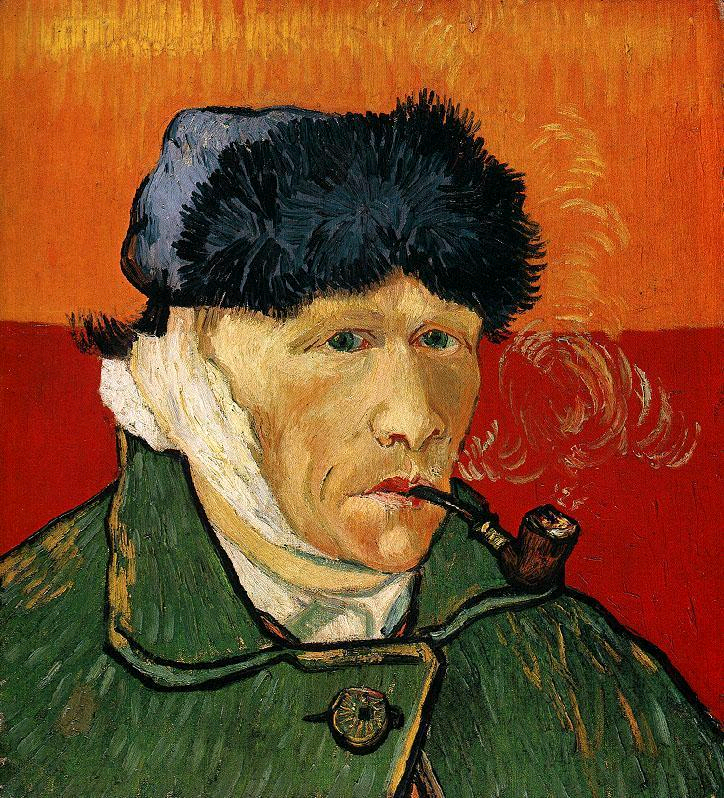

<--Back
Vincent van Gogh

본명: 빈센트 반 고흐
출생: 1853년 3월 30일 네덜란드
사망: 1890년 7월 29일 프랑스
고흐가 화가가 된 방법은 순전히 자신이 존경하던 화가들의 그림을 보고
그것을 모사하면서 기교를 익혀나가는 방식이었다. 당연히 이런 방식은
다른 화가들에 비해서 그 발전속도가 느려보일 수도 있지만 오히려 이 덕분에
고흐는 독특한 자신만의 화풍을 만들 수 있었다. 만약 고흐가 처음부터 파리로
가서 인상파 조류를 접했다면 자신의 개성이 사라졌을 수도 있다. 그러나 고흐가
일관적으로 자기 작품에 대해 '자신의 정념을 표현하는 것'을 하나의 화두로
아카데미즘을 계속해서 부정해왔고, 인상파를 접할 때도 훌륭하다고는 생각하나
자신과 맞지 않는 부분이 있다고 얘기했던 것을 생각하면 어찌 됐든 그는 개성있는
화풍을 획득했을 가능성이 높다.
 Vincent van Gogh
Vincent van Gogh